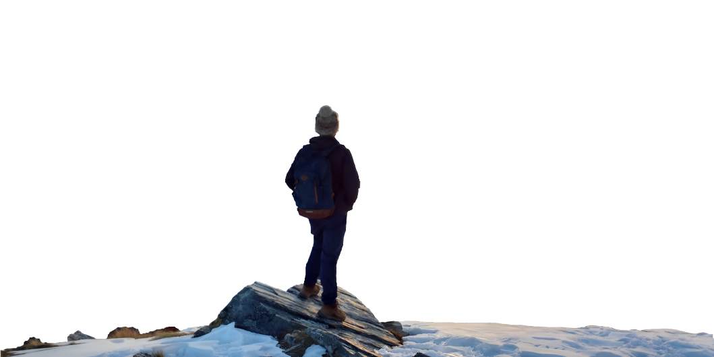
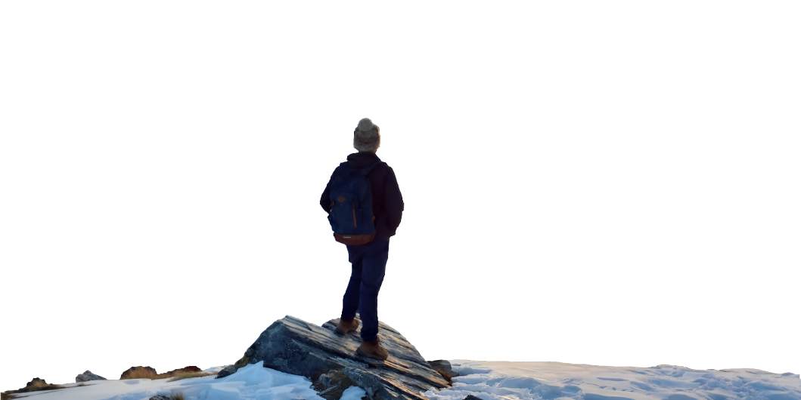

ADVENTURE
Adventure Time
An adventure is an exciting experience or undertaking that is typically bold, sometimes risky. Adventures may be activities with danger such as traveling, exploring, skydiving, mountain climbing, scuba diving, river rafting, or other extreme sports. Adventures are often undertaken to create psychological arousal or in order to achieve a greater goal, such as the pursuit of knowledge that can only be obtained by such activities.
BIKING
Biking is a fun and eco-friendly way to stay active and explore your surroundings. It can be a great form of exercise, improving cardiovascular health and building leg muscles. Biking is also a convenient way to commute or run errands, avoiding traffic and saving money on transportation costs. Whether on a leisurely ride or a challenging trail, biking offers a sense of freedom and adventure.
Biking is a top-notch cardio workout. You’ll burn about 400 calories an hour. Plus it strengthens your lower body, including your legs, hips, and glutes.
If you want a workout that’s gentle on your back, hips, knees, and ankles, this is a great choice.
PARA GLIDING
Para Gliding is a thrilling adventure sport that involves flying a wing-shaped parachute. It allows you to soar through the sky and experience the freedom of flight. With the help of thermals and wind currents, paragliders can stay in the air for hours and cover vast distances. Safety is paramount, and proper training is essential before attempting this sport. Paragliding offers an unparalleled perspective of the world and is an experience that should be on everyone's bucket list.
Paragliding is the recreational and competitive adventure sport of flying paragliders: lightweight, free-flying, foot-launched glider aircraft with no rigid primary structure. The pilot sits in a harness or lies supine in a cocoon-like 'pod' suspended below a fabric wing.
SURFING
Surfing is a popular water sport that involves riding waves using a board. It originated in Hawaii and has since spread across the globe, becoming a cultural phenomenon. Surfing requires skill, balance, and endurance as riders navigate the waves and execute maneuvers. It's not just a physical activity, but also a spiritual experience for many who enjoy the ocean's power and beauty. Surfing has a strong community that celebrates the sport and its values of respect, perseverance, and connection to nature.